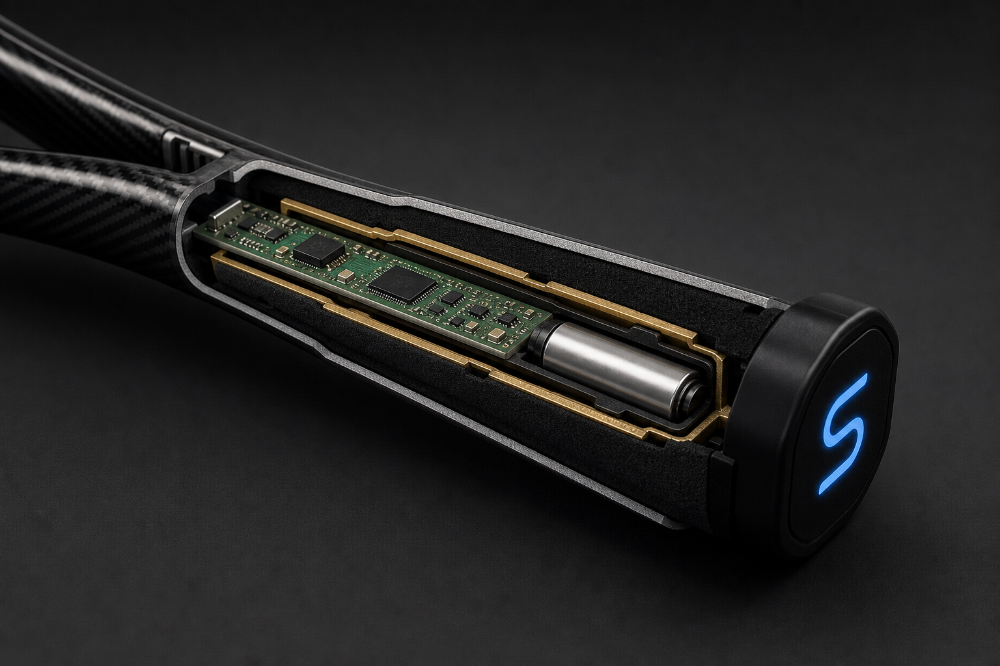

Prototype A
Form
Prove the object can live in a handle: envelope, appearance, install path, cavity, modular stack. 3D print, foam, CAD. No obligation to stream packets on day one.
Success: a player can hold it and forget the seam.

Prototype lab / Proof of concept
The project is still concept + proof of concept. Size and feel are proven separately from “can this sensing idea collect useful tennis data?” Miniaturization comes after the data is real.
Prove the object can live in a handle: envelope, appearance, install path, cavity, modular stack. 3D print, foam, CAD. No obligation to stream packets on day one.
Success: a player can hold it and forget the seam.
Prove the sensing idea. Development board + IMU + pressure, even if the first rig is larger than the cavity. The Tracer-like board is this chapter.
Success: repeated swings produce repeatable, distinguishable traces.
Process
Test plan
Many forehands, backhands, serves. Ask whether IMU traces separate. If they do not, classification stays off the home screen.
Change squeeze on purpose. The array must move with the hand, not with wishful software.
The same stroke, many times, same player. Consistency of the instrument before consistency of the athlete.
Different bodies, same task. The matching idea only starts when people are actually different in the data.
Matching
Player traits + swing traits + grip traits + racket traits can become a number. In the prototype that number is an experimental / conceptual score — 82/100 is a conversation starter, not a fitting certificate.
The interesting thesis is not a new sensor. It is: how does the interaction between a specific player and a specific racket show up in handle data?
Illustrative session
Not medical advice. Not a professional stringer or OEM endorsement.
Limits
Next generation
Denser pressure, a quieter IMU, better classifiers, multi-racket comparison, a coach dashboard, video locked to the same timeline, personal models.
Player, coach, and racket brand can share one object: the handle that finally reports what it felt.
More zones Video sync Coach view CalibrationPortfolio statement
It combines product design, embedded sensing, motion analysis, visualization, and sports engineering to turn hidden racket–hand interactions into measurable training insight. Current position: concept and proof of concept. Next: calibration, classification, and compatibility analysis.